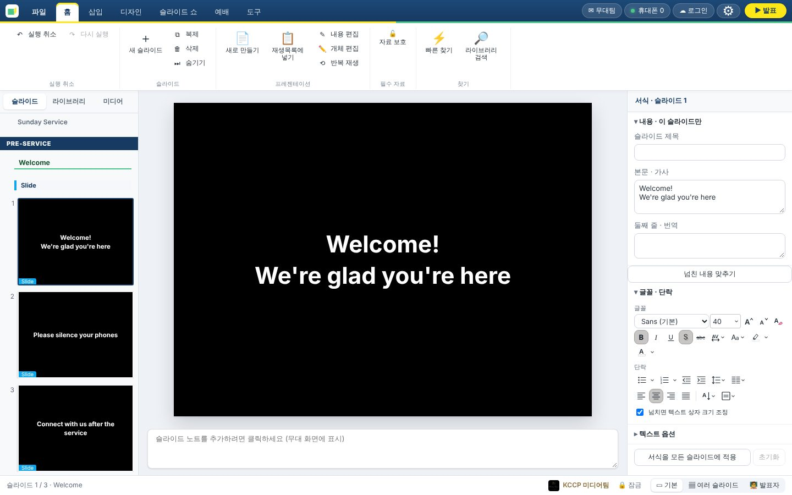
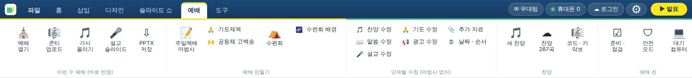
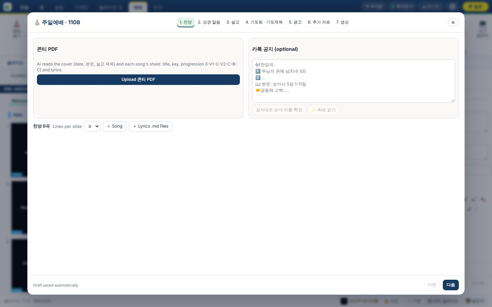
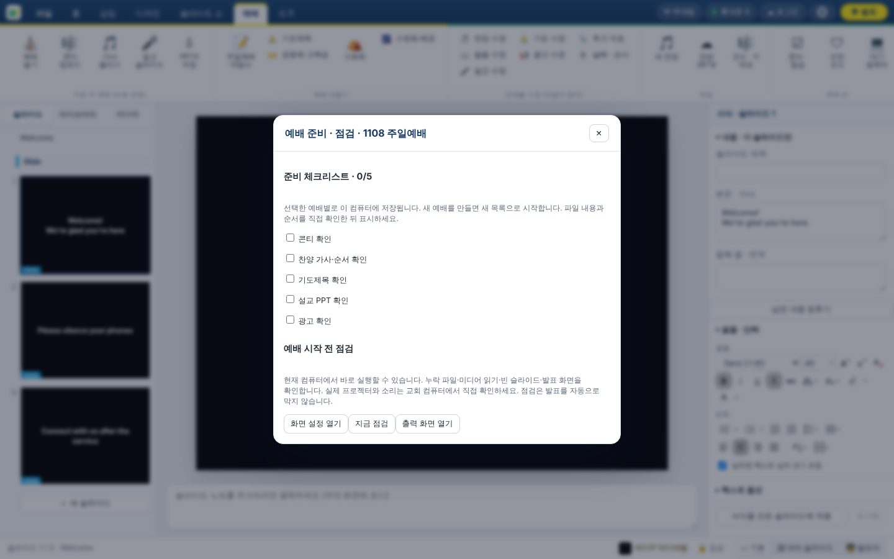

처음 쓰는 사람도 10분이면 예배 화면을 띄울 수 있어요
FreeCast는 PowerPoint처럼 슬라이드를 만들고, 예배 중에는 버튼 하나로 프로젝터에 띄우는 예배용 프레젠테이션 앱이에요. 모든 슬라이드는 교회 PowerPoint와 같은 4:3 비율이에요.
처음이라면 1번부터 4번까지 순서대로 읽어 보세요.
처음 한 번만 하면 돼요. 그다음부터는 자동으로 업데이트돼요.
인터넷 주소창에 아래 주소를 열고, 내 컴퓨터에 맞는 파일 하나만 받으세요.
github.com/shrlak/freecast/releases/latest
| 내 컴퓨터 | 받을 파일 |
|---|---|
| Mac (M1 · M2 · M3 · M4) | FreeCast-버전-arm64.dmg |
| Mac (Intel) | FreeCast-버전.dmg |
| Windows 10 / 11 | FreeCast-Setup-버전.exe |
오른쪽 위 ☁ 로그인을 눌러 로그인하면 슬라이드가 교회 서버에 저장돼서 다른 컴퓨터에서도 똑같이 열려요. 계정이 없으면 계정 만들기에서 아이디 · 비밀번호와 관리자 비밀번호(미디어팀장에게 물어보세요)를 넣으면 돼요. 로그인하지 않으면 이 컴퓨터에만 저장돼요.
PowerPoint와 거의 같아요. 빨간 숫자만 기억하세요.

1 2 3 4 5 6 7 8| 1 | 위쪽 탭 — 파일 · 홈 · 삽입 · 디자인 · 슬라이드 쇼 · 예배 · 도구. 예배 준비는 거의 다 예배 탭에 있어요. |
| 2 | ▶ 발표 — 노란 버튼. 누르면 프로젝터에 바로 띄워요. |
| 3 | ⚙ 설정 — 어느 모니터(프로젝터)에 띄울지, 휴대폰 리모컨 등을 정해요. |
| 4 | 왼쪽 창 — 슬라이드(지금 예배 순서) · 라이브러리(저장된 찬양 · 자료) · 미디어(배경 · 그림 · 영상). |
| 5 | 가운데 — 지금 고른 슬라이드. 글자를 눌러 바로 고칠 수 있어요. |
| 6 | 오른쪽 서식 — 글자 내용 · 글꼴 · 크기 · 배경을 바꿔요. |
| 7 | 노트 — 여기에 적은 메모는 청중에게는 안 보이고, 무대(찬양팀 · 설교자) 화면에만 보여요. |
| 8 | 🔒 잠금 · 보기 — 잠금이 켜져 있으면 화면에 나가는 슬라이드를 실수로 지울 수 없어요. 옆 버튼으로 보기 방식을 바꿔요. |
교회 템플릿(Front · 찬양 · 말씀 · 설교 · 광고 · Back)으로 자동으로 만들어 줘요.

오른쪽 아래 다음으로 넘어가요. 쓰다가 닫아도 자동 저장돼요.

예배 당일, 이 페이지만 보면 돼요.
| 이럴 땐 | 누르세요 |
|---|---|
| 화면을 잠깐 까맣게 (기도 시간 등) | B 다시 누르면 돌아와요 |
| 교회 로고만 보여 주기 | L |
| 글자만 지우고 배경은 두기 | F2 |
| 화면 모두 지우기 | F1 |
| 지금 슬라이드부터 발표 시작 | Shift + F5 |
컴퓨터에서 멀리 있어도 휴대폰 · 태블릿으로 넘길 수 있어요. 앱 설치는 필요 없어요.
대부분 이 다섯 가지면 충분해요.
가운데 슬라이드의 글자를 클릭해서 바로 고치거나, 오른쪽 서식 창의 본문 · 가사 칸에서 고쳐요. 저장 버튼은 없어요 — 자동 저장돼요.
⌘/Ctrl + K 를 누르고 가사 · 성경 구절 · 광고 한 단어를 치면 모든 자료에서 찾아요. Enter를 누르면 화면에 바로 떠요.
왼쪽 목록에서 슬라이드를 고르고 Enter = 뒤에 빈 슬라이드 추가, Delete = 삭제, ⌘/Ctrl+D = 복제.
(삭제가 안 되면 아래쪽 🔒 잠금이 켜져 있는 거예요. 발표 중 실수를 막는 기능이에요.)
예배 30분 ~ 1시간 전에 5분만 투자하세요.
| ☐ | 할 일 | 어디서 |
|---|---|---|
| ☐ | FreeCast를 켜고, 위쪽에 업데이트 알림이 있으면 미리 지금 재시작하여 업데이트 | 화면 위쪽 배너 |
| ☐ | 프로젝터 연결 후 출력 화면이 프로젝터로 되어 있는지 | ⚙ → 출력 화면 |
| ☐ | 콘티 · 찬양 가사 순서 · 기도제목 · 설교 PPT · 광고 확인 | 예배 → 준비 · 점검 |
| ☐ | 지금 점검으로 빠진 파일 · 빈 슬라이드 · 화면 연결 자동 확인 | 예배 → 준비 · 점검 |
| ☐ | 사진 · 영상을 이 컴퓨터에 미리 받아 두기 (인터넷이 끊겨도 안전) | 예배 → 안전 모드 → 예배 자료 모두 준비하기 |
| ☐ | 휴대폰 리모컨 연결 확인 | ⚙ → 리모컨 · 휴대폰 |
| ☐ | ▶ 발표로 첫 슬라이드가 프로젝터에 잘 뜨는지 확인 후 B(검은 화면)로 대기 | ▶ 발표 |

당황하지 말고 아래부터 확인해 보세요.
옛날 버전(0.7.6 이하)을 받은 경우예요. 최신 버전을 다시 받으면 1장 방법으로 열려요. 지금 바로 열어야 하면 응용 프로그램 → 유틸리티 → 터미널에 아래 한 줄을 붙여 넣고 Return을 누르세요.
xattr -cr /Applications/FreeCast.app
케이블 확인 → ⚙ → 출력 화면에서 프로젝터 선택 → Esc 후 다시 F5. 창이 다른 모니터에 떴다면 프로젝터 쪽으로 끌어다 놓고 F.
화면 아래 🔒 잠금이 켜져 있어서예요. 발표 중 실수 방지 기능이에요. 누르면 풀려요. 자료에 자물쇠(자료 보호)가 걸려 있어도 고칠 수 없어요 — 홈 → 자료 보호 해제.
⌘/Ctrl+Z → 안 되면 파일 → 휴지통 → 그래도 없으면 파일 → 복원 지점.
괜찮아요. 슬라이드는 항상 이 컴퓨터에 먼저 저장되기 때문에 발표는 그대로 돼요. 인터넷이 돌아오면 자동으로 동기화해요.
두 컴퓨터 모두 같은 계정으로 로그인되어 있는지 확인하세요. 오른쪽 위 ☁ 계정 이름을 누르면 동기화 상태가 보여요.
보기 전용으로 연결된 거예요. 리모컨의 조작권 요청을 누르거나, 컴퓨터에서 직접 넘기세요. 연결이 끊기면 자동으로 다시 연결돼요.
아무것도 안 해도 돼요. 앱을 끌 때 자동으로 설치돼요. 바로 하려면 위쪽 배너의 지금 재시작하여 업데이트. (예배 중에는 누르지 마세요!)
이 페이지만 출력해서 컴퓨터 옆에 붙여 두세요. Mac은 ⌘, Windows는 Ctrl.
| 키 | 동작 |
|---|---|
| F5 | 처음부터 발표 |
| Shift+F5 | 지금 슬라이드부터 |
| → Space | 다음 슬라이드 |
| ← | 이전 슬라이드 |
| B | 검은 화면 켜기/끄기 |
| L | 로고 켜기/끄기 |
| F1 | 화면 모두 지우기 |
| F2 | 글자만 지우기 |
| F3 | 배경만 지우기 |
| Esc | 발표 끝내기 |
| 키 | 동작 |
|---|---|
| ⌘/Ctrl+Z | 실행 취소 |
| ⌘/Ctrl+Shift+Z | 다시 실행 |
| ⌘/Ctrl+K | 빠른 찾기 (가사 · 성경 · 광고) |
| ⌘/Ctrl+F | 라이브러리 검색 |
| Enter | 빈 슬라이드 추가 |
| Delete | 슬라이드 삭제 |
| ⌘/Ctrl+D | 슬라이드 복제 |
| ⌘/Ctrl+V | 복사한 그림을 새 슬라이드로 |
| ⌘/Ctrl+1 | 청중 화면 열기 |
| ⌘/Ctrl+2 | 무대 화면 열기 |